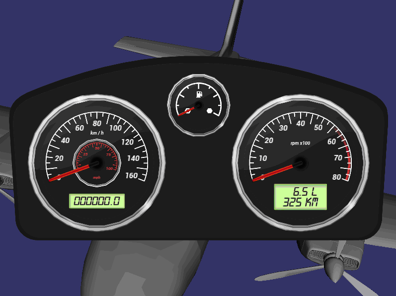

OpenSceneGraph Integration Tutorial
In this simple and quick tutorial, we will show you how to integrate NoesisGUI with OpenSceneGraph (OSG), which is one of the most famous 3D rendering engine and widely used in scientific visualization and virtual reality applications.
You may first download and compile OSG from http://www.openscenegraph.com or you may directly download and use the prebuilt binaries from AlphaPixel at http://www.alphapixel.com/osg/downloads/free-openscenegraph-binary-downloads. Build introduction and tutorials about OpenSceneGraph itself can be found in the book OpenSceneGraph 3.0 Beginners Guide, written by Rui Wang and Xuelei Qian and published by the Packt Publishing http://www.packtpub.com/openscenegraph-3-0-beginners-guide/book
Before you start to work on the integration, don’t forget to add the files, NoesisWrapper.h and NoesisWrapper.cpp, to your project. A NoesisDrawable class is defined and implemented in these files, which will perform GUI operations and drawings in a single drawable of the scene graph, which is totally controlled by the OSG scene management system and rendering backend. First of all, include necessary header files:
#include <osgDB/ReadFile>
#include <osgGA/StateSetManipulator>
#include <osgViewer/ViewerEventHandlers>
#include <osgViewer/Viewer>
#include "Common/NoesisWrapper.h"
To create a new NoesisDrawable instance, we will have to provide an UI filename for the constructor. The UI file can be any kind of XAML files built with the NoesisGUI BuildTool, and will be displayed in the 3D environment we created.
std::string uiFile("Gui/Samples/CarHud.xaml");
osg::ref_ptr<NoesisDrawable> noesis = new NoesisDrawable(uiFile);
Add the NoesisDrawable instance to a new geode. Note that we must disable the frustum culling feature of this node because a GUI drawable should never be culled. The geode is also treated as a transparent object in the scene, so we can erase the transparent background of UI elements.
osg::ref_ptr<osg::Geode> geode = new osg::Geode;
geode->setCullingActive( false );
geode->addDrawable( noesis.get() );
geode->getOrCreateStateSet()->setMode( GL_BLEND, osg::StateAttribute::ON );
geode->getOrCreateStateSet()->setRenderingHint( osg::StateSet::TRANSPARENT_BIN );
Next, we create a head-up display camera in the scene graph and use it to display the geode. The camera uses an orthographic projection matrix in the range of [0, 1] to represent all UI elements on the top of all other scene objects.
osg::ref_ptr<osg::Camera> camera = new osg::Camera;
camera->setClearMask( GL_STENCIL_BUFFER_BIT );
camera->setClearStencil( 1 );
camera->setReferenceFrame( osg::Transform::ABSOLUTE_RF );
camera->setRenderOrder( osg::Camera::POST_RENDER );
camera->setProjectionMatrix( osg::Matrix::ortho2D(0.0, 1.0, 0.0, 1.0) );
camera->addChild( geode.get() );
Now we can create the 3D scene in usual ways, including adding models, textures, animations, shadows and anything else. As an example here, we load a Cessna model into the scene graph and then create the viewer to display both the 2D UI and 3d scene objects.
osg::ref_ptr<osg::Node> scene = osgDB::readNodeFile("cessna.osg");
osg::ref_ptr<osg::Group> root = new osg::Group;
root->addChild( scene.get() );
root->addChild( camera.get() );
osgViewer::Viewer viewer;
viewer.addEventHandler( new osgViewer::StatsHandler );
viewer.setSceneData( root.get() );
viewer.realize();
The last step of our tutorial is to send a resizing event so NoesisGUI will know the total size of UI elements. This is done by calling the following code:
osgViewer::GraphicsWindow* gw =
dynamic_cast<osgViewer::GraphicsWindow*>( viewer.getCamera()->getGraphicsContext() );
if ( gw )
{
// Send a window size event for resizing the UI
int x, y, w, h; gw->getWindowRectangle( x, y, w, h );
viewer.getEventQueue()->windowResize( x, y, w, h );
}
return viewer.run(); // now run into the simulation loop!
The result should be good:
There is no need to worry about handling user events like mouse and keyboard inputs. All of them are already done in the NoesisDrawable. The complete source code can be found in the SimpleScene.cpp example in the source code. If you want to get feedback from the UI elements, for instance, to get to know if a button is clicked, you may refer to the InteractiveUI.cpp example in the source code.